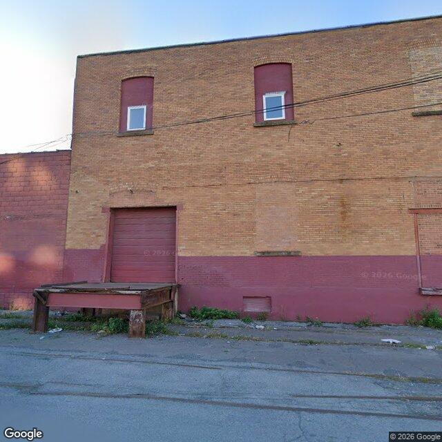

Property entry
1925 Park St & Hiawatha Blvd E
Published 2026-11-01T23:04:25+00:00
Parcel key: 002-02-020

City records
Matches use parcel IDs or normalized property addresses. Nearby properties are not treated as matches. Records may include historical or closed cases; check each record's status and dates. Publication dates are not source-data dates.
Vacant properties 0
No matches stored for this feed. The feed or address matching may be incomplete; this is not confirmation that no records exist.
Records refreshed 2026-10-27.
Rental registry 0
No matches stored for this feed. The feed or address matching may be incomplete; this is not confirmation that no records exist.
Records refreshed 2026-10-27.
Code violations 11
- Latitude
- 43.07115809
- Longitude
- -76.1660747
- Neighborhood
- Washington Square
- ObjectId
- 97560
- SBL
- 002.-02-02.0
- complaint_address
- 1925 Park St & Hiawatha Blvd E
- Latitude
- 43.07115809
- Longitude
- -76.1660747
- Neighborhood
- Washington Square
- ObjectId
- 97561
- SBL
- 002.-02-02.0
- complaint_address
- 1925 Park St & Hiawatha Blvd E
- Latitude
- 43.07115809
- Longitude
- -76.1660747
- Neighborhood
- Washington Square
- ObjectId
- 97563
- SBL
- 002.-02-02.0
- complaint_address
- 1925 Park St & Hiawatha Blvd E
- Latitude
- 43.07115809
- Longitude
- -76.1660747
- Neighborhood
- Washington Square
- ObjectId
- 97565
- SBL
- 002.-02-02.0
- complaint_address
- 1925 Park St & Hiawatha Blvd E
Records refreshed 2026-10-27.
Unfit properties 0
No matches stored for this feed. The feed or address matching may be incomplete; this is not confirmation that no records exist.
Records refreshed 2026-10-27.
AI image observations (unverified)
These observations are generated from an image, not an inspection or an official code finding. No human verification is recorded here.
Image capture date: Not recorded. The entry publication date does not establish the age of the image.
Automated image description
A multi-story brick commercial or industrial building exterior with a loading dock, roll-up overhead door, and painted foundation trim along a paved street.
Property type guess: commercial
Visible conditions
- Two-story brick exterior facade with painted lower foundation wall.
- Elevated outdoor loading dock platform positioned in front of a red roll-up overhead door.
- Upper-floor window openings appear partially altered or filled around smaller window inserts.
- Minor weeds and scattered litter visible along the base of the building foundation and paved ground.
Condition scores
- Roof
- not_visible
- Siding Or Facade
- fair
- Windows Doors
- fair
- Porch Or Entry
- fair
- Yard Or Lot
- fair
- Trash Debris
- minor
- Vegetation Overgrowth
- minor
Visible flags
- Boarded Windows Or Doors
- no
- Fire Damage Visible
- no
- Structural Damage Visible
- no
- Vacancy Signs Visible
- no
- Active Construction Visible
- no
Possible image-only flags
- Minor debris and weed growth along the building perimeter edge.
AI review boxes
- Minor weeds and debris along foundation: Unmanaged weeds sprouting along the building foundation edge near pavement.
Review reasons
- Possible image-only issue
Image quality
- Available
- True
- Bytes
- 72883
- Needs Rerun
- False
['Roof line and upper structure are partially cut off by image frame.', 'Rear and side elevations are not visible from this single front-facing perspective.']
ACS tract context
Census Tract 2; Onondaga County; New York
- Total population
- 3511
- Median household income
- 51848
- Poverty rate
- 28.1
- Housing units
- 1686
- Vacancy rate
- 14.7
- Renter-occupied share
- 50.1
- Median gross rent
- 146700
OpenStreetMap nearby
60 meter search radius
Nearby map data is temporarily unavailable. This does not mean there are no mapped features.